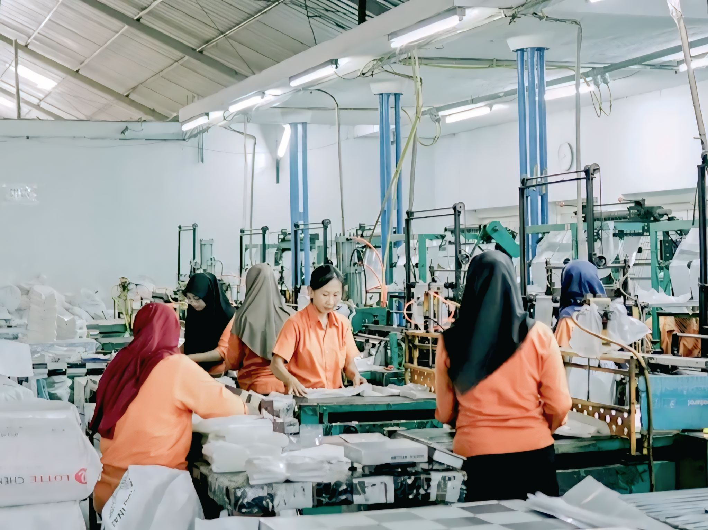
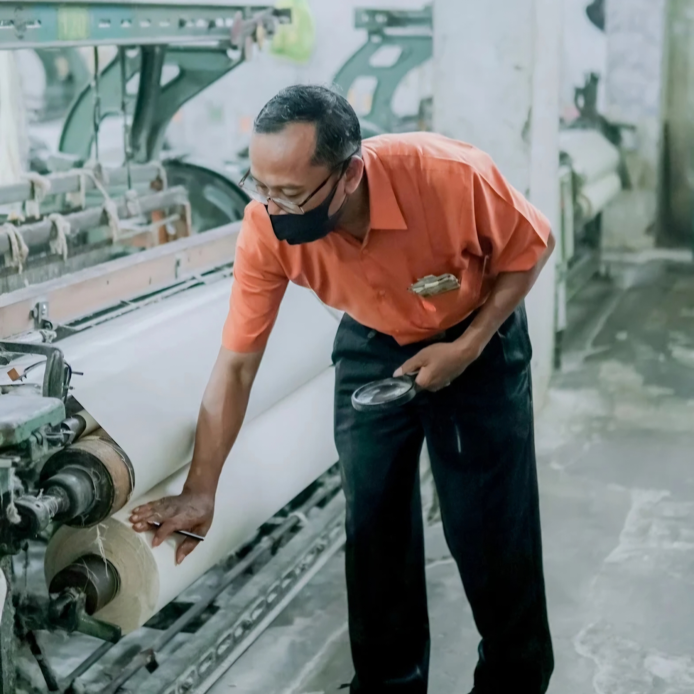
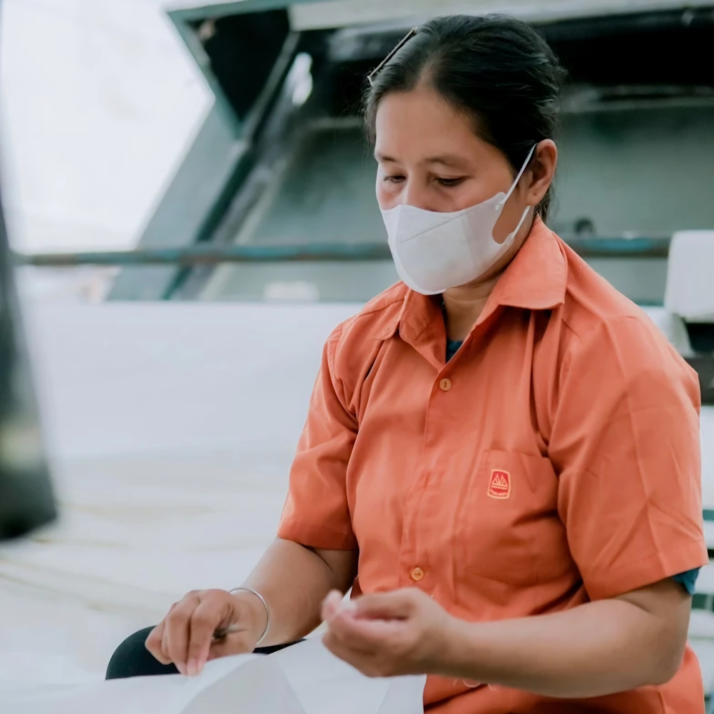
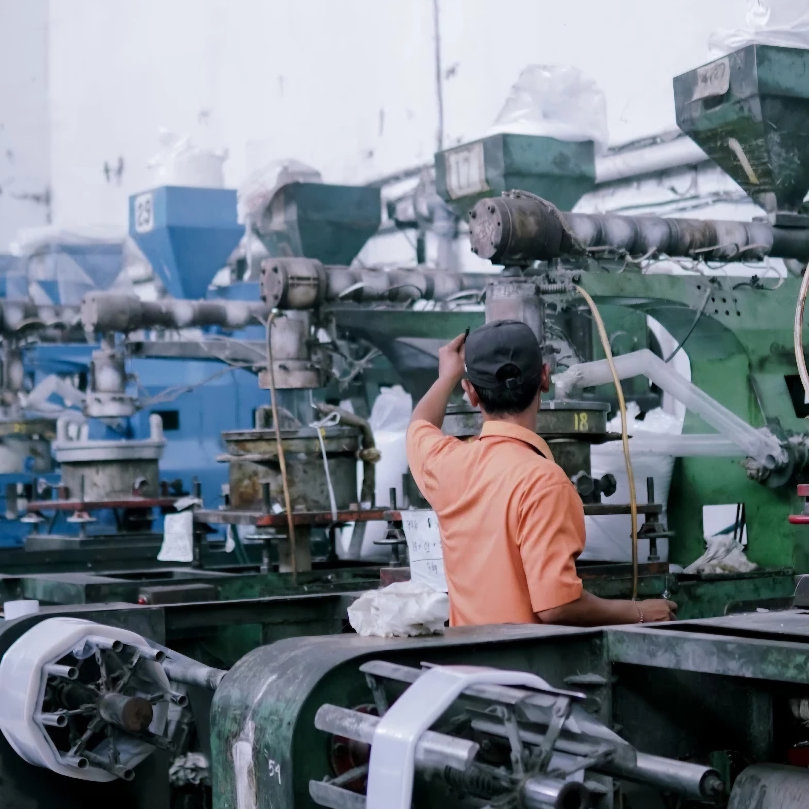
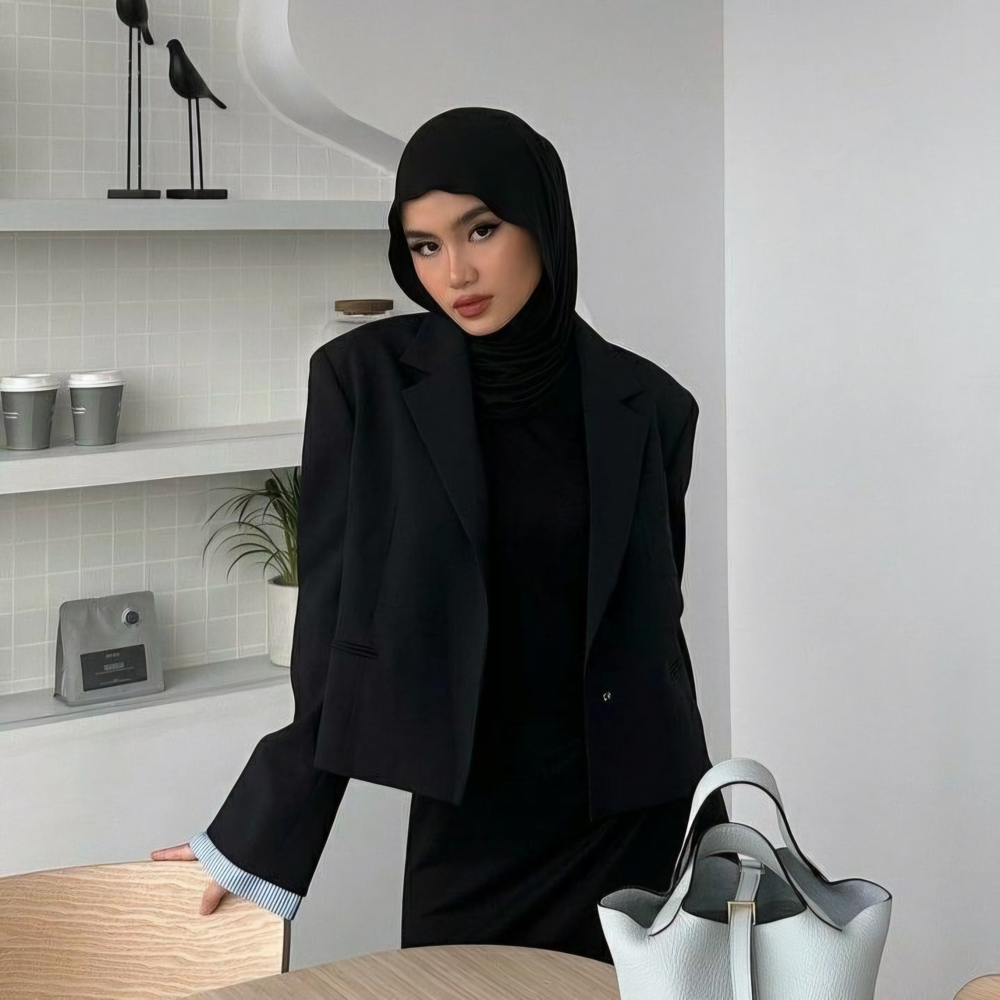

Selamat Datang di PT Kusuma Mulia Plasindo Infitex
Produsen Tekstil dan Kain Grey Berkualitas Tinggi dengan Dukungan Teknologi Penenunan Terpadu
Jelajahi Profil KamiTentang Kami
Mengenal PT Kusuma Mulia Plasindo Infitex Lebih Dekat

Sejarah & Komitmen PT Kusuma Mulia Plasindo Infitex
PT Kusuma Mulia Plasindo Infitex didirikan berdasarkan Akta Notaris No. 11 pada tanggal 09 Oktober 1997. Perusahaan mulai berproduksi pada akhir tahun 1997 dan kemudian menambah divisi produksinya hingga berkembang pesat di bidang industri tekstil dan penenunan kain.
-
Sejarah Perkembangan Lini Bisnis
Berlokasi di Ceper, Klaten, perusahaan terus berkembang memasok produk kain mentah (kain grey) seperti Rayon, Katun, dan TC untuk pasar Jawa, Bali, hingga nasional.
-
Teknologi Penenunan Terpadu
Didukung ratusan unit mesin tenun modern serta proses warping, sizing, dan cucuk yang terintegrasi demi menjaga kualitas tenunan.
Hingga saat ini, PT Kusuma Mulia Plasindo Infitex terus berkomitmen menjaga efisiensi produksi, memperbarui teknologi, dan meningkatkan standar mutu produk demi memberikan kepuasan maksimal bagi seluruh mitra industri.
Tahapan Utama Proses Produksi
Alur terintegrasi dalam menghasilkan kain mentah berkualitas tinggi di PT Kusuma Mulia Plasindo Infitex
Persiapan Bahan Baku
Pemilihan benang serat berkualitas tinggi (PE, Rayon, Cotton) sesuai spesifikasi pesanan.
Proses Penggulungan
Penggulungan benang lusi ke dalam gulungan beam warping secara sejajar dan teratur.
Proses Pengkanjian
Lapisan kanji diberikan pada benang lusi untuk meningkatkan kekuatan benang saat penenunan.
Proses Cucuk
Masuknya benang lusi ke mata gun dan sisir tenun sesuai dengan pola susunan kain.
Proses Penenunan
Proses penganyaman benang lusi dan pakan menggunakan mesin tenun hingga membentuk kain grey.
Pengawasan & Pengemasan
Pemeriksaan kualitas cetak kain, pengukuran panjang, serta pengemasan produk akhir.
Komitmen Mutu & Keselamatan Industri
Penerapan standar pengawasan kualitas, sistem K3, dan penanganan sanitasi dalam operasional pabrik



Layanan
Kain yang kami produksi dan layanan untuk pelanggan
Kain Rayon
Memproduksi kain grey (mentah) berbahan rayon, katun, Polyester Felt (PE), dan Tetron Cotton (TC) melalui proses warping, sizing, cucuk, dan tenun.
Informasi Lebih LanjutKain Katun
Kain katun mentah dari serat kapas. Menyerap air dengan baik dan nyaman dipakai sehari-hari.
Informasi Lebih LanjutKain Poliester dan Poliester Katun
Kain poliester dan campuran poliester dengan katun yang awet, tidak mudah kusut, dan cepat kering.
Informasi Lebih LanjutKain Sesuai Pesanan
Kami melayani pesanan kain dengan ukuran dan kerapatan serat yang berbeda-beda sesuai permintaan pelanggan.
Informasi Lebih LanjutPemeriksaan dan Tingkat Mutu Kain
Setiap kain diperiksa dari cacat lusi, pakan, dan ambrol, lalu dipisahkan menurut tingkat mutu A sampai D.
Informasi Lebih LanjutPengiriman Kain
Kain dikirim ke mitra dan pelanggan, termasuk PT Kusuma Mulia Solo dan Palur untuk proses pencelupan dan penyempurnaan.
Informasi Lebih LanjutTestimoni
Kata mereka yang pernah bekerja sama dengan kami
Pilihan kainnya lengkap, ada rayon, katun, poliester, dan campuran poliester katun. Tinggal pilih sesuai kebutuhan.

Taylor Swift
Pelaku Industri Pakaian
Kain rayonnya halus dan nyaman, cocok untuk bahan batik kami. Hasil tenunannya juga rapi dan berkualitas.

Kim Jennie
Pengrajin Batik
Di sini ada pelatihan, dan biaya berobat juga ditanggung perusahaan, jadi kerja lebih tenang.

Denny Caknan
Operator Mesin Tenun
Hasil Produksi
Ragam kain mentah yang kami produksi


Manajemen
Safina Aqila
Manajer Produksi
Tiara Shabrina M.
Staf ProduksiNabila Handoko
Staf InspeksiAdi Saputra
Staf PenyimpananPertanyaan yang Banyak Ditanyakan
Temukan jawaban atas pertanyaan umum mengenai produk, layanan, dan operasional PT Kusuma Mulia Plasindo Infitex
Produk apa saja yang dihasilkan oleh PT Kusuma Mulia Plasindo Infitex?
PT Kusuma Mulia Plasindo Infitex memproduksi kain setengah jadi (kain grey) berkualitas tinggi, seperti Kain Rayon, Kain Katun (Cotton), dan Kain Teteron Cotton (TC / Polyester).
Di mana lokasi pabrik dan kantor PT Kusuma Mulia Plasindo Infitex?
Pabrik dan kantor kami berlokasi di Jl. Ceper No.KM 01, Sendono, Ceper, Kec. Ceper, Kabupaten Klaten, Jawa Tengah 57465
Bagaimana tahapan proses produksi kain di PT Kusuma Mulia Plasindo Infitex?
Proses produksi kami meliputi tahapan persiapan bahan baku, penggulungan benang (warping), pengkanjian (sizing), penyusunan benang (cucuk/drafting), penenunan (weaving), hingga tahap pemeriksaan kualitas dan pengemasan (inspection & packing).
Bagaimana standar pengendalian kualitas (Quality Control) yang diterapkan perusahaan?
Kami menerapkan pengawasan mutu yang ketat di setiap lini produksi menggunakan metode analisis statistik untuk meminimalkan cacat kain (cacat lusi, pakan, maupun ambrol) guna memastikan kualitas kain mentah berada pada standar maksimal.
Apakah PT Kusuma Mulia Plasindo Infitex menerapkan standar K3 dan ramah lingkungan?
Ya, kami berkomitmen menjaga Kesehatan dan Keselamatan Kerja (K3) dengan melengkapi Alat Pelindung Diri (APD) bagi pekerja, serta memiliki sistem pengelolaan limbah cair dan padat yang aman sesuai standar sanitasi industri.
Bagaimana cara melakukan pemesanan atau menghubungi pihak manajemen perusahaan?
Pemesanan dan konsultasi dapat dilakukan dengan menghubungi bagian pemasaran kami melalui menu Kontak di website ini, via Email, WhatsApp Business, atau langsung datang ke kantor operasional kami di Klaten.
Hubungi Kami
PT Kusuma Mulia Plasindo Infitex siap melayani kebutuhan informasi dan kerja sama terkait produk kain grey berkualitas.
Alamat Perusahaan
Jl. Ceper No.KM 01, Sendono, Ceper, Kec. Ceper, Kabupaten Klaten, Jawa Tengah 57465
Telepon
(0272) 551359
Email Perusahaan
kusumamuliaceper@gmail.com